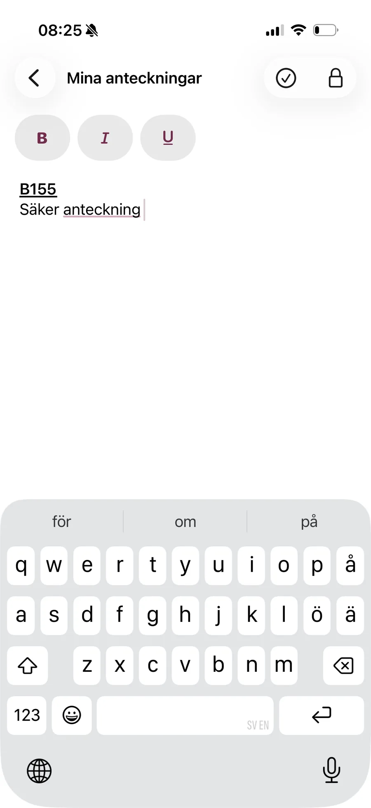
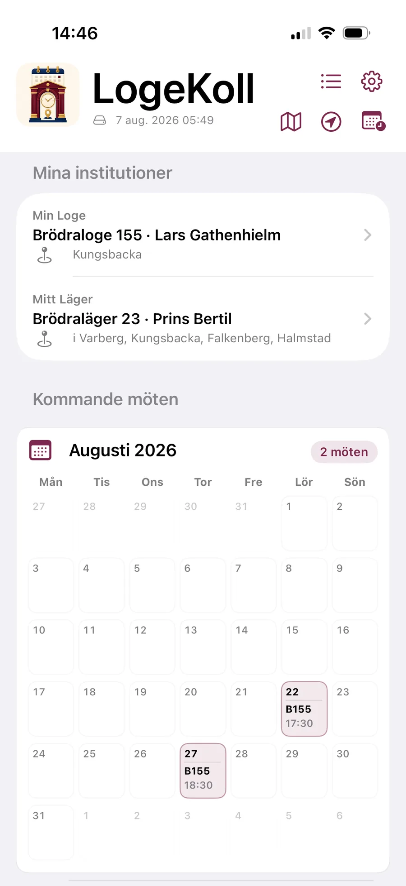
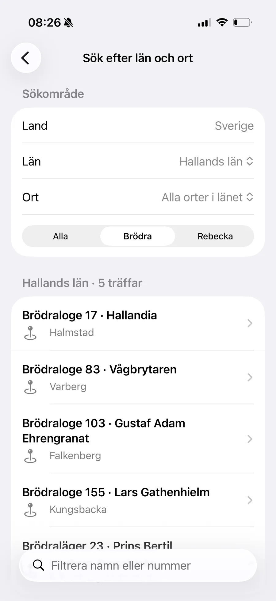
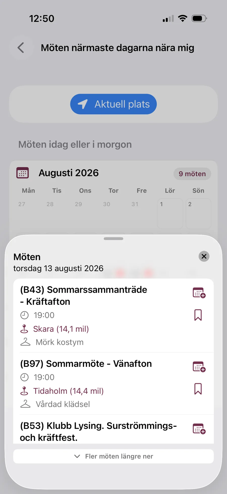
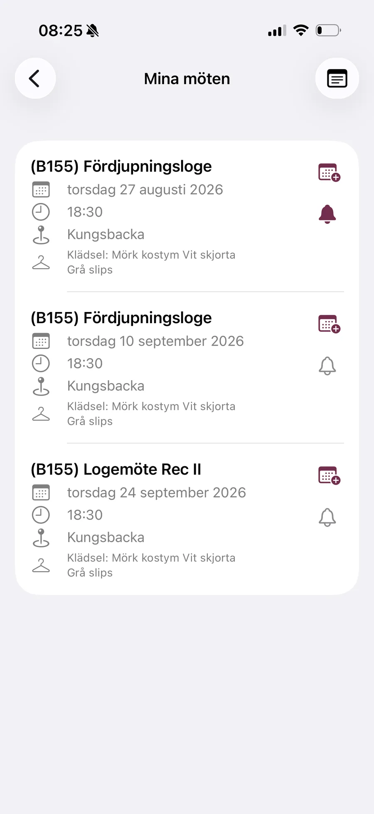
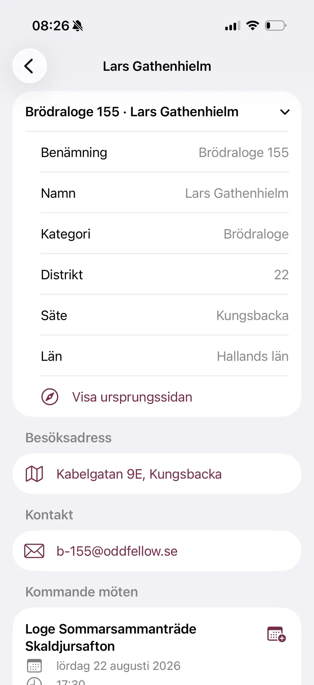
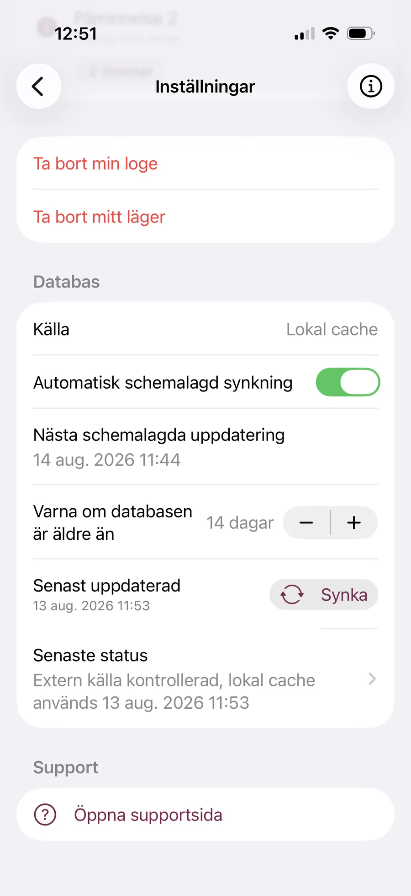

01 /
Mina anteckningar
Skriv egna anteckningar med fet, kursiv och understruken text. Innehållet lagras krypterat och öppnas med biometri eller enhetens kod.

Lär känna LogeKoll
En smidigare väg till svenska Odd Fellow-institutioner, kommande möten och allt du vill ha koll på – samlat i mobilen.


En app med vardagen i fokus
Från den egna logens nästa möte till en institution i en annan del av Sverige. LogeKoll hjälper dig att hitta informationen, hålla ordning på möten och förbereda nästa besök.
01 / Personlig överblick
Välj Min Loge och, om du vill, Mitt Läger. LogeKoll samlar deras kommande möten direkt på startsidan, med datum, tid och klädsel när uppgifterna finns.
Se dina nästa möten i en tydlig lista eller kalendervy.
Välj hur sökfunktionerna visas: som lista eller ikoner.
Se när mötesdatabasen senast uppdaterades.
02 / Upptäck institutioner
Sök bland svenska Odd Fellow-institutioner via län och ort, filtrera på Brödra eller Rebecka och skriv ett namn eller nummer om du vet vad du letar efter.
Hitta närliggande institutioner sorterade efter avstånd.
Se möten i dag eller i morgon i närheten.
Öppna besöksadresser i telefonens kartapp.


03 / Möten på ditt sätt
Spara möten i Mina möten med en svepgest. När du vill kan du förbereda en kalenderhändelse med titel, tid, plats och relevant mötesinformation redan ifylld.
Håll dina sparade möten i datumordning.
Kontrollera och ändra kalenderuppgifter före du sparar.
Aktivera upp till två inställbara lokala påminnelser per sparat möte.

04 / Allt om institutionen
På institutionens egen sida hittar du namn, kategori, distrikt, säte och län samt kontaktvägar och kommande möten när informationen finns tillgänglig.

05 / Omtanke om dina uppgifter
LogeKoll kräver inget användarkonto. Du väljer själv när platsen ska användas och kan skydda dina anteckningar med telefonens inbyggda verifiering.
Skriv egna anteckningar med fet, kursiv och understruken text. Innehållet lagras krypterat och öppnas med biometri eller enhetens kod.

Synka mötesdatabasen automatiskt eller manuellt, se senaste uppdateringen och få en varning om informationen blivit för gammal. En lokal kopia kan användas när hämtningen misslyckas.

Platsåtkomst begärs först när du själv startar en Nära mig-sökning. Läs mer om hanteringen av dina uppgifter i integritetspolicyn.
Två plattformar · samma idé
De centrala verktygen för institutioner, möten och planering finns på båda plattformarna. Systemintegrerade genvägar kan fungera olika.
Sök institutioner och kommande möten även med Siri och appen Genvägar när funktionen är aktiverad.
På Android finns appgenvägen Snabbsökning för institutioner och kommande möten. Utformningen kan skilja sig från iPhone.
Skärmbilderna är från iPhone och visar exempel på appens funktioner. Gränssnitt och systemfunktioner kan skilja sig på Android.
Börja med din loge
Välj medlemstyp, ange Min Loge och låt LogeKoll samla mötena på ett ställe. Behöver du vägledning finns hjälpen nära.